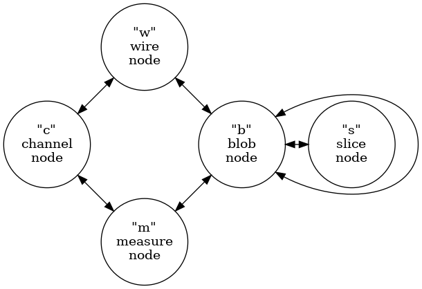
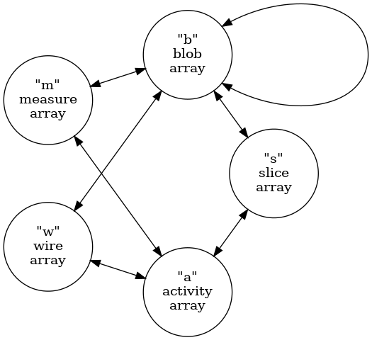

Cluster Arrays
(top) (pkg)
Table of Contents
Provides array representations of ICluster.
The ICluster graph represents identity, attributes and associations of
five types of objects related to WCT imaging. In addition to the
associations represented internally by the graph some objects carry
additional information and references to objects that are external to
the graph. The ClusterArrays class provides methods to “flatten” the
internal and external structure to a set of arrays. This document
describes the ClusterArrays interface and provides guidance on how to
use the arrays it produces.
1. Low-level array representation
The API provides arrays in the form of Boost.MultiArray types.
2. Graph connection schema
Production of an ICluster graph is described in detail in the Ray Grid
document. Its structure is summarized by the type graph from that
document. This graph illustrates the five types of nodes and the
allowed types of edges between node types.

3. Array schema
The array schema closely matches that provided by the python-geometric
HeteroData interface with the following simplification:
- All node attributes are coerced to double precision floating point scalar values.
- No graph nor edge attributes.
This results in a graph being represented by a set of node arrays and a set of edge arrays.
Each node array is of a given type. An array type is defined by a tuple that labels the interpretation of the columns of an array. The tuple elements map to node attributes. The rows of an array map to node instances of a given type.
All edge arrays have two columns. The first provides indices of rows in a “tail” array and the second in a “head” array“. An edge array is mapped to these two node arrays by an array naming convention based on array codes and edge codes.
Before listing these codes, one structural change must be understood.
The ICluster graph construction schema described above holds implicit
that channel nodes (and wire nodes) represent physical entities. In
particular, a given channel node may be reached by following an
s-b-m-c path from more than one slice. On the other hand, the
ISlice::activity() method provides an direct mapping (external to the
graph structure) betwen slice and channel and the amount of signal
collected in the channel over the time slice. It is this information
that was used to initially from b-m-c paths. Furthermore, the
activity map information is a superset of s-c relationship found by
following s-b-m-c paths as some activity may not end up contributing
to forming blobs. As the activity map can not be coerced into a slice
array column and because it is a redundant superset of channel node
information, the ClusterArrays will rewrite the ICluster graph as
illustrated with the cluster array graph schema:

Between these two type schema graph representations, all cluster graph
node types are mapped directly to cluster array types except that
channel nodes are mapped to activity arrays with an new edge from
activity to slice. The array representation also includes two changes
from the node representation which are implicit. An activity is
unique to a given slice and not all activities may share an edge with
a measure. In this way the ISlice::activity() map can be represented
and from the set of cluster arrays the original cluster graph can be
constructed.
With that understood we define node array codes as the ASCII value of
the lower case initial letter of the node array names: activity, blob,
measure, slice and wire. For example, an activity array will have a
label anodes. The edge array codes are the combination of two node
array codes in alphabetical order. For example, the edges between
slice and activity are represented in an array with a name including
the label asedges. Each array is held in a Numpy file named with a
prefix cluster indicating array is in the format described in this
document followed by the cluster identity number <ident> and the
node/edge label just described. For example a cluster 6501 is
represented by the arrays
......
The remainder of this section describes the columns that make up each type of array.
3.1. Activity
An activity represents an amount of signal and its uncertainty collected from a channel over the duration of a time slice.
- ident, (int) channel ID as defined in the “wires” file
- value, the central value of the signal
- uncertainty, the uncertainty in the value
- index, (int) the channel index
- wpid, (int) the wire plane id
3.2. Wire
The wire array represents the “geometric” information about physical wire segments.
- ident, (int) the application determined ID number.
- wip, (int) the wire-in-plane (WIP) index.
- segment, (int) the number of segments between this wire segment and the channel input.
- channel, (int) the channel ID (not row index).
- plane, (int) the plane ID (not necessarily a plane index).
- tailx, the x coordinate of the tail endpoint of the wire.
- taily, the y coordinate of the tail endpoint of the wire.
- tailz, the z coordinate of the tail endpoint of the wire.
- headx, the x coordinate of the head endpoint of the wire.
- heady, the y coordinate of the head endpoint of the wire.
- headz, the z coordinate of the head endpoint of the wire.
3.3. Blob
A blob describes a volume in space bounded in the longitudinal direction by the duration of a time slice and in the transverse directions by pairs of wires from each plane and it includes an associated amount of signal contained by the volume.
- ident, (int) the application determined ID number.
- value, the central value of the signal
- uncertainty, the uncertainty in the value
- faceid, (int) the face ident from
WirePlaneId(kUnkownLayer,face,apa) - sliceid, (int) the slice ident
- start, the start time of the blob
- span, the time span of the blob
- min1, (int) the WIP providing lower bound of the blob in plane 1.
- max1, (int) the WIP providing upper bound of the blob in plane 1.
- min2, (int) the WIP providing lower bound of the blob in plane 2.
- max2, (int) the WIP providing upper bound of the blob in plane 2.
- min3, (int) the WIP providing lower bound of the blob in plane 3.
- max3, (int) the WIP providing upper bound of the blob in plane 3.
- ncorners, (int) the number of corners
- 24 columns holding corners as (y,z) pairs, 12 pairs, of which ncorners are valid.
3.4. Slice
A slice represents a duration in drift/readout time.
- ident, (int) the application determined ID number.
- value, the central value of the signal.
- uncertainty, the uncertainty in the value.
- frameid, (int) the frame ident number
- start, the start time of the slice.
- span, the duration time of the slice.
3.5. Measure
A measure represents the collection of channels in a given plane connected to a set of wires that span one or more blobs overlapping in one wire plane. Its includes an associated signal representing the sum of signals from the participating channels.
- ident, (int) the application determined ID number.
- value, the central value of the signal.
- uncertainty, the uncertainty in the value.
- wpid, the wire plane ID
3.6. Edge
An edge represents an association between a row in a tail array and a row in a head array. Unlike node arrays above, edge arrays are of integer value.
- tail, index of a row in a tail array
- head, index of a row in a head array
4. Cluster archive files
As described above, WCT ICluster graph may be represented by a number
of arrays. Each array is persisted in a Numpy file (eg .npy file
extension). A set of files representing a cluster graph may be packed
into a cluster archive file. A set is defined by the array file names
having the prefix cluster and a common <ident> number. Elemental
Numpy files/arrays in a set are interpreted according to their suffix
label (eg Anodes or ABedges). A cluster archive file may contain a
number of such sets.
The cluster archive file format may be Tar (eg with .tar extension)
and have optional compression (eg .tar.gz or .tar.bz2) or it may be
Zip (.zip or .npz). The files comprising one set should be contiguous
in the archive and sets should be sequential in ascending <ident>
number.
5. Implementation
The ClusterArrays class will convert ICluster to cluster arrays
following above schema. See ClusterFileSink::numpify() for example
usage. The C++ WCT components ClusterFileSink and ClusterFileSource
will write and read cluster archive files in Numpy array (and JSON
structure) format.
These components provide special-case file I/O. A cluster array representation may be easily converted into the WCT tensor data model With such a converter, cluster graphs may pass through the more flexible and general forms of tensor data model I/O. See tensor-data-model.html for details. FIXME: implement these converters!
The Python module wirecell.img.tap can read cluster files.